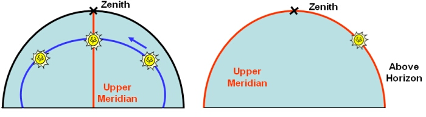

Local noon is defined as the time when the Sun undergoes an upper meridian transit, crossing the imaginary great circle on the celestial sphere that joins the celestial poles and the observers’ zenith.

An apparent solar day is the length of time between two successive local noons. Due to the Earth’s elliptical orbit and axial tilt, the length of the apparent solar day varies throughout the year. For convenience, the mean solar day is introduced based on the motion of a ‘fictious’ sun that travels at constant speed across the sky.
Every location on the Earth falls within a particular time zone, where all clocks are set to the same mean solar time. These regions cover around 15 degrees of longitude. Countries that straddle two time zones often place the entire country in one time zone, and some countries adopt neighbouring time zones or fractional time zones (e.g. +9.5 hours) for political and/or economic reasons. An observer’s local noon will usually differ from noon measured within the time zone. Corrections must be made to timepieces, such as sundials, that rely on the actual position of the Sun to give a measurement of time.